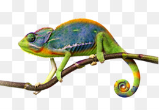

Хамелеон
О Хамелеоне
Хамелео́ны (лат. Chamaeleonidae) — семейство ящериц, приспособленных к древесному образу жизни, способных менять окраску тела.
Большинство видов имеет длину тела 30 см, наиболее крупные достигают 50—60 см, самые мелкие — 3—5 см.
Голова шлемообразная, с заметно приподнятой затылочной областью.
Часто украшена более или менее выпуклыми гребнями, буграми или вытянутыми, заострёнными рогами.
В большинстве случаев все эти образования развиты у самцов, а у самок носят зачаточные формы.
Ноги длинные, своеобразно приспособленные к лазанью. Пальцы срастаются в две противополагающиеся друг другу группы по 2 и 3 и имеют вид «клешней», которые могут плотно обхватывать ветви дерева.
Хвост толстый у основания, постепенно сужается к концу, может спирально закручиваться вниз и обвиваться вокруг ветвей.
Данной способностью обладают большинство представителей семейства за исключением сравнительно небольшого числа видов с коротким хвостом. Хамелеоны имеют необычные органы зрения.
Веки животных сросшиеся, постоянно покрывающие глаз, но имеющие отверстие для зрачка.
Движения левого и правого глаза могут осуществляться несогласованно, что имеет важное значение при ловле насекомых, но перед атакой хамелеон поворачивает оба глаза на добычу.
Хамелеоны обладают круговым обзором. Во время охоты хамелеоны, как правило, длительное время сидят на ветвях деревьев.
Тело животного при этом остаётся неподвижным, а глаза постоянно двигаются (но иногда хамелеоны медленно подкрадываются к добыче).
Насекомых ловят языком с ловчей присоской на конце, процесс выбрасывания которого длится около 1/20 секунды, а вместе с возвратом в исходное положение — не более полусекунды.
За три секунды хамелеон может распознать и поймать до четырёх насекомых[4]. В «нерабочем» положении язык удерживается специальной косточкой в нижней челюсти.
Иногда добыча оказывается слишком тяжёлой, чтобы удержаться языком; в последующие разы хамелеон хватает добычу такого размера ртом.